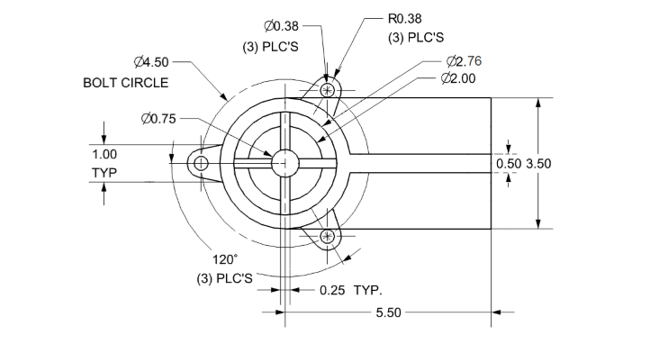

NX12 <<
Previous Next >> CHAPTER 2 – GETTING STARTED
CHAPTER 1 – INTRODUCTION
在全球競爭日益激烈的背景下，現代製造環境的特徵在於交付品種日益增多，並趨向於小批量和高質量的產品。 除非以高質量、低成本和在更短時間推出新產品，否則在全球競爭中生存是一件很難的事。隨著計算能力的巨大變化和用於設計和生產的軟件工具的廣泛可用性，工程師現在正在使用計算機輔助設計（CAD），計算機輔助製造（CAM）和計算機輔助工程（CAE）系統來自動化其設計和生產過程。 現在，這些技術每天都用於各種不同的工程任務。 以下是產品實現過程中如何使用CAD，CAM和CAE技術的簡要說明。
1.1 PRODUCT REALIZATION PROCESS
產品實現過程可以大致分為兩個階段：設計和製造。 設計過程從識別新客戶需求和待改進的設計變量開始，這些營銷變量在獲得客戶反饋後由市場營銷人員進行識別。 一旦收集了相關的設計信息，就制定了設計規範。 根據相關設計信息進行可行性研究，並進行詳細設計和分析。 詳細設計包括設計概念化，預期產品圖紙，草圖和幾何建模。 分析包括應力分析，干涉檢查，運動學分析，質量特性計算和公差分析以及設計優化。 從這些活動中獲得的結果的質量與分析的質量以及進行分析的工具直接相關。
製造過程始於從生產計劃開始的車間活動，該活動使用設計過程圖並以實際產品結束。 流程計劃包括生產計劃，材料採購和機器選擇等活動。 在生產過程的各個階段，需要完成各種任務，例如購買新工具，NC編程和質量檢查。 流程計劃包括對產品製造中使用的所有流程的計劃。 通過質量控制檢查的零件將經過功能測試，包裝，標記和運送給客戶。

Product Realization Process (Mastering CAD/CAM, by Ibrahim Zeid, McGraw Hill, 2005).
1.2 BRIEF HISTORY OF CAD/CAM DEVELOPMENT
當前的CAD / CAM技術的起源可以追溯到文明古代，當時古埃及的工程師意識到了圖形通信的存在。現今的正交投影技術是在1800年代左右發明的。，CAD / CAM系統的真正開發始於1950年代。 CAD / CAM在上個世紀經歷了四個主要的發展階段。 1950年代被稱為交互式計算機圖形時代，而當時計算機的缺點使這個時代的發展放慢了腳步。在1950年代後期，開始了自動編程工具（APT）的開發。
1960年代是交互式計算機圖形學最關鍵的研究時期。伊万·薩瑟蘭（Ivan Sutherland）開發了一個畫板系統，該系統演示了在陰極射線管（CRT）上交互式創建圖形和對象替換的可能性。 CAD一詞開始出現，“設計”一詞超越了基本的製圖概念。
在1970年代，過去十年中計算機圖形學的研究工作開始富有成果，工業，政府和學術界都意識到了交互式計算機圖形學在提高生產率方面的潛力。 1970年代被譽為計算機製圖的黃金時代和專用儀器設計應用程序的開始。國家計算機圖形協會成立（NCGA），並啟動了初始圖形交換規範（IGES）。
在1980年代，新的理論和算法得到了發展，並且設計和製造的各種要素都得到了發展。主要的研究和開發重點是將CAD / CAM系統擴展到三維幾何設計之外，並提供更多的工程應用。
目前，CAD / CAM的開發側重於設計和製造中各種元素的高效、快速集成和自動化，以及新算法的開發。 有許多可用於直接使用的商業CAD / CAM軟件包，它們非常易於使用並且對外的態度非常友好。
以下是當前市場中的一些商業軟件包。
■ Solid Edge，AutoCAD，Inventor和TurboCAD是一些負擔得起的CAD軟件系統。
■ NX，Pro-E，CATIA和SolidWorks是高端建模和設計軟件系統，它們成本更高但功能更強大。 這些軟件系統還具有計算機輔助的製造和工程分析功能。
■ Onshape和Fusion 360是基於雲的CAD軟件，可通過用戶的瀏覽器提供CAD功能。
■ ANSYS，ABAQUS，NASTRAN和COMSOL是主要用於CAE的軟件包。
1.3 DEFINITION OF CAD/CAM/CAE
1.3.1 Computer Aided Design – CAD
CAD是與使用計算機系統來協助設計的「創建，修改，分析和優化有關的技術」。 任何體現計算機圖形的計算機程序和在設計過程中有助於工程功能的應用程序都可以歸類為CAD軟件。
CAD的最基本作用是定義設計的幾何形狀-機械零件，產品組裝，建築結構，電子電路，建築物佈局等。CAD系統的最大好處是可以節省大量時間和精力， 減少因每次需要重新定義設計的幾何形狀而導致的錯誤。
Computer Aided Manufacturing – CAM
CAM技術涉及計算機系統，該系統通過與工廠生產資源的計算機接口來計劃、管理和控制製造操作。
CAM最重要的領域之一是數控「（NC）」。 這是一種使用編程指令來控制機床的技術，該機床將切削，銑削，磨削，沖壓或將原料製成成品。 CAM的另一個重要功能是在機器人編程中。 流程計劃也是計算機自動化的目標。
Computer Aided Engineering – CAE
CAE技術使用計算機系統來分析CAD創建的產品的功能，從而使設計人員可以模擬和研究產品的性能，從而可以優化和優化設計。
CAE工具可用於許多不同類型的分析。 例如，運動學分析程序可用於確定機構中的運動路徑和連桿速度。 動態分析程序可用於確定複雜組件（例如汽車）中的載荷和位移。 最受歡迎的分析方法之一是使用有限元方法（FEM）。 該方法可用於確定應力，變形，傳熱，磁場分佈，流體流動和其他連續場問題，而這些問題通常很難用任何其他方法解決。
1.4. SCOPE OF THIS TUTORIAL
本教程是為有興趣學習如何使用NX 12設計機械零部件的學生和工程師編寫的。 學習使用NX 12對於學習如何使用其他CAD系統（例如PRO-E和CATIA）也將非常有價值。 本教程提供了學習NX 12的系統方法。
第2章介紹了NX 12的基本知識，從開始會議到通過練習基本功能（如打印，保存和退出）來熟悉NX 12佈局。它還簡要介紹了坐標系，圖層，各種工具箱和其他重要命令，這些將在後面的章節中使用。
第3章介紹了素描的概念。它描述瞭如何創建草圖以及給出幾何和尺寸約束。本章非常重要，因為當今的組件的幾何形狀非常複雜，並且僅憑基本特徵很難建模。
零件的實際設計和建模始於第4章。它描述了不同的特徵，例如參考特徵，後掠特徵和原始特徵，以及這些特徵如何用於創建設計。對特徵執行各種特徵操作。
您將在第5章中學習如何從零件模型創建圖形。在本章中，我們將演示如何通過添加視圖，標註零件圖形的尺寸以及修改圖形中的各種屬性（例如文本大小，箭頭大小）來創建圖形。和寬容。
第6章介紹了裝配建模的概念及其術語。它描述了TopDown建模和Bottom-Up建模。我們將使用自下而上的建模方法將組件組裝到產品中。
第7章介紹了自由格式建模。將演示建模曲線和平滑表面的方法。
第8章簡要介紹了NX 12中用於有限元分析的設計仿真
第9章是將設計的模型實施到加工環境中進行加工的實時經驗。 本章介紹刀具路徑的生成，驗證和仿真，以創建CNC（計算機數字代碼），以從多軸甚至先進的CNC機床生產設計零件。
每章中使用的示例和練習題經過精心設計，最終將在本章中進行匯總。 由於這一獨特功能，您應該保存在每一章中創建的所有模型。
NX歷史
NX源自於美國麥道航太公司，近30年的資深CAD / CAM / CAE系統，再加上西門子在系統與設備，工程上的經驗與能力提供在加工與產品開發設計上更多的資源與整合。
在CAM加工上智慧模型（MasterModel）的概念，至少包含3DCAD模型，與NC路徑的完整關聯性，並替換數據大小以及刀具路徑的管理，在高速切銷加工上提供穩定可靠與加工品質，同時針對複合銑削加工的領域提供完整的解決方案。
NX優點
NX讓客戶增加新產品數量，減少30％以上的開發時間，縮短70％以上的設計分析重複作業，並減少高達90％的電腦數控（CNC）編程時間。
CAD
• 從零件設計資料輸入開始，通常是3D CAD模型，某些情況下也可能是2D圖面。通常會需要用到3D CAD軟體以準備或調整零件設計模型，進行後續的NC編程操作。
CAM
• NX CAM包含NC編程，後處理及工具機模擬。
• 功能完備的套件Siemens是進階工具機控制器技術及驅動設備領域的公認領導廠商。
NX CAD / CAM一體化的優勢
• 3D零件建模準備NX最新的CAD技術能夠NC程序設計師迅速準備零件模型，包括協力廠商的CAD模型。只要利用同步建模技術，就可以直接編輯零件模型，準備讓零件進入NC編程。
• NX提供一組專門的CAD功能，讓NC程序設計師能夠在建立NC操作之前快速進行分析。
• 建模，組立件與製圖-NX提供了當今市場上最強大的CAD功能組合。這些功能已替換NX CAM之中，且有需要的NC程序設計師使用建立零件，坯件形狀，夾治具或工具機模型以進行模擬。
CAD-CAM-CNC流程鏈
NX12 <<
Previous Next >> CHAPTER 2 – GETTING STARTED